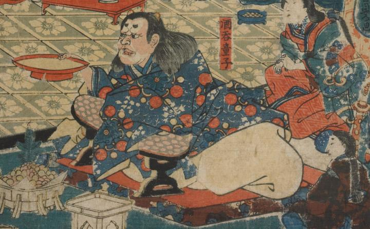

酒呑童子；シュテンドウジ，男；オトコ

酒をのむ酒呑童子。2本の短い角が長い髪の間から覗いており、顔は赤く額やあごの部分のみ白くなっている。紺地に赤や白の模様の入った着物と白い袴を身につけ、右手に大きな赤い盃をもっている。
著作者：一寿齋芳員（歌川芳員）／出典：親書誌：U426_nichibunken_0088：源頼光大江山入之圖；ミナモトライコウオオエヤマイリノズ／日付：2007／資源識別子：U426_nichibunken_0088_0001_0000
Copyright (c)2010- International Research Center for Japanese Studies, Kyoto, Japan. All rights reserved.